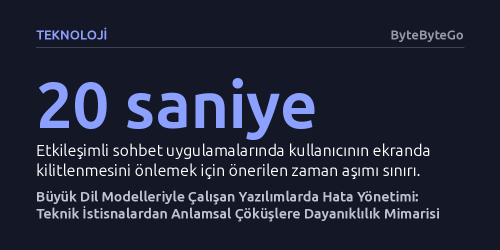

TEKNOLOJI · ByteByteGo · 2026-09-08
Büyük dil modeli uygulamalarında en kritik arızalar teknik çökmelerden değil, modelin kurallara aykırı veya hatalı veri üretmesine rağmen başarılı sayılan anlamsal hatalardan kaynaklanıyor. Sistem dayanıklılığı, deterministik olmayan bu çıktıları yakalamak için geleneksel hata yöntemleriyle katmanlı yedekleme mekanizmalarının birlikte işletilmesini gerektiriyor.
Geleneksel yazılımlardaki 'hata yoksa sonuç doğrudur' kabulünün yapay zekâda geçersiz olduğunu ve asıl tehlikeli aksaklıkların API başarıyla yanıt verdiğinde başladığını gösteriyor.

Geleneksel yazılım mühendisliği belirli kurallara dayanır. İki sayıyı toplayan bir fonksiyon yazdığınızda, girdi aynı kaldığı sürece çıktı her zaman aynıdır. Fonksiyon bir hata fırlatmadan tamamlandıysa, sonucun geçerli olduğu kabul edilir. Bu dünyada karşılaşılan arızalar da öngörülebilirdir: Veritabanı bağlantısı kopabilir, ağ zaman aşımına uğrayabilir veya yetkilendirme anahtarı geçersiz kalabilir. Kod çöker, istisna yakalanır ve hata kaydı tutulur.
Ancak büyük dil modelleri (LLM) devreye girdiğinde bu deterministik yapı kökünden sarsılır. Bir LLM destekli uygulama, yalnızca kendi dahili mantığını yürütmez; olasılıksal temellerle çalışan harici bir modele veri gönderip oradan dönen serbest metne göre kritik kararlar alır. Müşteri destek botlarından fatura ayrıştırma sistemlerine kadar geniş bir yelpazede modelin ürettiği metin bir sonraki operasyonun girdisi haline gelir.
İşte bu mimari kayma, klasik yazılım anlayışının en temel varsayımını yıkar: Bir çağrının teknik olarak hatasız tamamlanması, elde edilen sonucun doğru veya güvenli olduğu anlamına gelmez. Yapay zekâ uygulamalarında sistem dayanıklılığı, yalnızca sunucuların ayakta kalmasını değil, modelin öngörülemez davranışlarının kontrol altına alınmasını gerektirir.
Yapay zekâ tabanlı sistemlerde karşılaşılan sorunları iki ana kümeye ayırmak gerekir: Teknik arızalar ve anlamsal hatalar. Teknik arızalar, sistemin işlemi fiziksel olarak tamamlayamadığı durumlardır. Ağ kesintileri, DNS çözümleme sorunları, model sağlayıcısının çökmesi veya API anahtarının süresinin dolması bu sınıfa girer. Bu arızalar genellikle standart HTTP durum kodlarıyla (örneğin 401, 429 veya 500) kendini belli eder.
Asıl riskli ve yönetilmesi güç olan küme ise anlamsal hatalardır. Bu senaryoda model sağlayıcısı isteği başarıyla işler ve HTTP 200 koduyla döner; ancak içerik işlevsizdir. Uygulama yapılandırılmış bir JSON nesnesi beklerken model serbest sohbet metni yazmış olabilir. Bağlam penceresi dolduğu için yanıt cümlenin ortasında kesilebilir. Daha da tehlikelisi, model gerçekte var olmayan bir iade politikasını veya stokta bulunmayan bir ürünü varmış gibi uydurabilir (halüsinasyon).
Durum araç (tool) kullanan otonom ajanlarda çok daha karmaşık hale gelir. Örneğin bir ödeme aracını tetikleyen model işlemi başarıyla tamamlayabilir; fakat uygulamanın bu onayı alacağı ağ bağlantısı anlık olarak koptuğunda, körlemesine yapılacak bir yeniden deneme müşteriden mükerrer ücret tahsil edilmesine yol açar. Bu nedenle "Geleneksel hata yönetimi teknik aksaklıkları çözmeye odaklanırken, yapay zekâ uygulamaları hem teknik hem de anlamsal hataları birlikte yönetmek zorundadır."
Dayanıklı bir yapay zekâ uygulaması tasarlarken, modeli tek başına izole bir bileşen olarak görmek yanıltıcıdır. İstek hattı kullanıcı arayüzünden başlar, veri tabanlarına ve harici araçlara uzanır, ardından tekrar kullanıcıya akar. Bu zincirin her halkasında ayrı bir arıza olasılığı bulunur. Bu yüzden hataları henüz modele ulaşmadan engellemek ilk savunma hattıdır.
Kullanıcı boş bir metin gönderdiğinde, desteklenmeyen bir dosya formatı yüklediğinde veya sistemin işleyemeyeceği boyutta bir belge ilettiğinde, doğrudan LLM çağrısı yapmak gereksiz maliyet ve gecikme üretir. Sabit iş kuralları ve şema kısıtları uygulamanın giriş katmanında doğrulanmalıdır. Erken aşamada reddedilen geçersiz girdiler hem bütçeyi korur hem de kullanıcıya net ve deterministik hata mesajları verilmesini sağlar.
Benzer şekilde bağlam uzunluğu ve zaman aşımı mekanizmaları da proaktif biçimde yönetilmelidir. Her modelin işleyebileceği belirteç (token) sınırı bellidir. İstek gönderilmeden önce belirteç sayımı yapılmalı, geçmiş sohbetler özetlenmeli veya eski mesajlar ayıklanmalıdır. Ayrıca zaman aşımı süreleri kullanıcı deneyimine göre ayarlanmalıdır; ekranda anlık yanıt bekleyen bir kullanıcı için yirmi saniyelik bir bekleme makulken, gece çalışan toplu belge analizlerinde birkaç dakikalık limitler tanımlanabilir.
Geçici teknik arızalar karşısında en sık başvurulan yöntem yeniden denemedir (retry). Ancak plansız bir yeniden deneme mekanizması felakete davetiye çıkarabilir. Ağ kesintisi veya aşırı yük nedeniyle yanıt veremeyen bir sağlayıcıya sürekli istek yağdırmak, arızayı daha da derinleştirir ve sonsuz döngüler yüzünden maliyetleri katlar.
Bunu önlemenin yolu üstel geri çekilme (exponential backoff) uygulamaktır; yani her başarısız denemenin ardından bekleme süresi katlanarak artırılır. Buna ek olarak bekleme sürelerine rastgele küçük sapmalar (jitter) eklenmelidir. Eğer bu rastgele seğirme eklenmezse, aynı anda hata alan binlerce istemci tam olarak aynı saniyede tekrar istek atarak sağlayıcı üzerinde yapay bir trafik dalgası (thundering herd) oluşturur.
Sağlayıcı uzun süreli bir çöküş yaşıyorsa devre kesici (circuit breaker) mimarisi devreye girmelidir. Sistem normal işlerken devre kapalıdır. Hata eşiği aşıldığında devre açılır ve yeni istekler sağlayıcıya hiç gönderilmeden anında reddedilir ya da alternatif yollara aktarılır. Belli bir süre sonra devre yarı açık konuma geçerek birkaç test isteği yollar; servis toparlanmışsa devre yeniden kapanır. Bu sayede hem kullanıcılar boşuna bekletilmez hem de çöken servise nefes alma alanı tanınır.
Gerçek sistem dayanıklılığı, hiçbir şeyin bozulmadığı ideal bir dünya kurmak değil, arızalar kaçınılmaz hale geldiğinde sistemin kontrollü bir biçimde gerilemesini (graceful degradation) sağlamaktır. Bir yapay zekâ uygulamasında birincil model devre dışı kaldığında kullanıcının karşısına anlamsız bir hata ekranı çıkarmak en son çare olmalıdır.
Kademeli bir yedekleme (fallback) stratejisinde, en gelişmiş model erişilemez olduğunda öncelikle daha küçük ve hızlı bir yedek modele geçilir. O da çalışmıyorsa önceden hazırlanmış şablon yanıtlar, kurallar veya önbellekteki veriler devreye girer. İşlem hiçbir şekilde otomatik yürütülemiyorsa, güvenli bir şekilde insan operatörün onayına aktarılır. Bu basamaklandırma sayesinde kullanıcı kişiselleştirilmiş tam deneyimi alamasa bile eli boş dönmez.
Yine de yedekleme kurgulanırken işin niteliği göz ardı edilmemelidir. Genel bir şirket içi toplantı özetinde küçük bir model yeterli olabilirken, karmaşık bir hukuk metninin analizinde düşük kapasiteli bir yedek modele güvenmek yeni anlamsal felaketler doğurabilir. Dahası, birincil model ile yedek modelin aynı bulut sağlayıcısı üzerinden çağrılması tek arıza noktası (single point of failure) riskini ortadan kaldırmaz; sahici bir yedeklilik sağlayıcı çeşitliliği gerektirir.